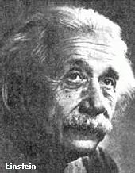
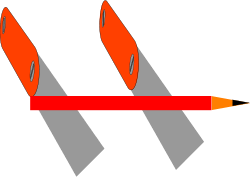

PsiPog.net
NI's Telekinesis Training Manual II
by Not_Important
"He who has imagination without learning has wings but no feet"
Disclaimer & Copyright
This article is based on facts not fiction. Telekinesis is a psychic ability, which is classified as paranormal, and therefore you won't find any exact and safe information about its nature and development. The author and the publisher do not take any responsibility for the information provided in this article. Some of the information is pure science. And I do not recommend children to read it.
As the author of this article I give PsiPog.net the full and exclusive copyright. Any replication, modification, or copy of any part of this article without the prior, written consent of the respective owners is prohibited. Any violators will be prosecuted in a court of law. Copyright infringement is a violation of federal law subject to criminal and civil penalties.
Introduction
Albert Einstein said once: "No problem can be solved from the same consciousness that created it. We must learn to see the world anew". I believe that every person reading this article is a discoverer. Everyone who tries to learn telekinesis and shares his experiences moves this world a bit further. Telekinesis and psionics belongs now to "parascience", a yet-to-discover-science, but many years ago asteroids and radio waves belonged to parascience, too. Maybe psionics is not officially accepted yet, but each personal success in telekinesis is another step to amplify our scientific world. Each experience helps to create a synthesis of knowledge and to draw some common conclusions and facts. It lies in your hands to discover and to learn, don't focus on someone else, find your own way. Do not follow where the path may lead. Go instead where there is no path and leave a trail.
This article is another "despaired attempt" ( ) to tell more about telekinesis than it has already been told. People keep asking for a detailed step-by-step how-to guide to improve in telekinesis. I know many people who can move the psiwheel, but very few who actually moved bigger things consciously. I'm very sorry to tell you
that there is no similar "guide" available yet. WE are the people doing the research; there is no one there who can show you what to do next. All you can do is the good old try-and-error method, brute force learning. Try to do it one way, then another, etc. until it works. All I can do is to offer you my
thoughts, theories and discoveries based on my own experiences, logic and common facts from books. In this article I'll tell you some things which might help you to advance in telekinesis.
) to tell more about telekinesis than it has already been told. People keep asking for a detailed step-by-step how-to guide to improve in telekinesis. I know many people who can move the psiwheel, but very few who actually moved bigger things consciously. I'm very sorry to tell you
that there is no similar "guide" available yet. WE are the people doing the research; there is no one there who can show you what to do next. All you can do is the good old try-and-error method, brute force learning. Try to do it one way, then another, etc. until it works. All I can do is to offer you my
thoughts, theories and discoveries based on my own experiences, logic and common facts from books. In this article I'll tell you some things which might help you to advance in telekinesis.
The Subconscious
Let's start with the subconscious. I've had the chance to learn more about its nature from psychology journals and some books dedicated completely to this topic. What is the subconscious? Subconscious is a separate mind within your own brain (scary, isn't it?  ). Many say it's a part of your own mind, but, either way, normally you don't have a conscious awareness of it. If you imagine your brain as the CPU (central processing unit of a computer), your body-parts as the periphery devices like printer, monitor, etc. and your own mind as the
software controlling the CPU, then your subconscious must be the operating system (let's hope it's not Windows
). Many say it's a part of your own mind, but, either way, normally you don't have a conscious awareness of it. If you imagine your brain as the CPU (central processing unit of a computer), your body-parts as the periphery devices like printer, monitor, etc. and your own mind as the
software controlling the CPU, then your subconscious must be the operating system (let's hope it's not Windows  ), between the CPU and the program. If you are a programmer, you know that every Windows program interacts constantly with Windows itself via messages. And although you aren't aware of it, your subconscious sends you hundreds of messages in form of feelings, memories, etc. And
whenever you want to move a leg or perform telekinesis, you unconsciously send a "message" to your subconscious to perform the task. You might think, you are moving the object, but in fact it's your subconscious. Without it you are as helpless as software on a CD. All of your physical and many of your
mental skills lie in your subconscious.
), between the CPU and the program. If you are a programmer, you know that every Windows program interacts constantly with Windows itself via messages. And although you aren't aware of it, your subconscious sends you hundreds of messages in form of feelings, memories, etc. And
whenever you want to move a leg or perform telekinesis, you unconsciously send a "message" to your subconscious to perform the task. You might think, you are moving the object, but in fact it's your subconscious. Without it you are as helpless as software on a CD. All of your physical and many of your
mental skills lie in your subconscious.
So, how can you enhance some of its skills? Modern psychology compares the subconscious mind with the mind of an animal, because animals are believed to have none or a very small part of conscious mind. Therefore a dog's mind consists mainly or totally of its subconscious. How do you train your dog to follow an instruction? By repeating the instruction several times (many times in fact). The same thing happens while you practice telekinesis, you "tell" (in fact you just focus on the objective) your subconscious what you want it to do. And it takes some time until it actually understands what you want it to do and until it finds out how to do it. In 3 words: practice is important.
Another interesting point is that your dog has to be able to accomplish what you ask it to do. You can't train it to fly, since it has no apparent ability to do it. This means that your subconscious already has the skill to perform telekinesis. It is able to perform it. Never forget it: you don't learn it from nothing; the ability is already there, inside of yourself.
So now your doggy knows what you mean when you tell it to "sit", next you want to train it to accomplish a more complex task like "bring me a beer" ( ). How do you do it? The same way. Only now it'll take more time and effort. Once you have learnt to move the psiwheel, you'll need more effort and patience to move a pencil, but once there, you'll do it without any effort. And there is no real way to escape the process of learning,
but to clench the teeth and go right through it.
). How do you do it? The same way. Only now it'll take more time and effort. Once you have learnt to move the psiwheel, you'll need more effort and patience to move a pencil, but once there, you'll do it without any effort. And there is no real way to escape the process of learning,
but to clench the teeth and go right through it.
There might be some ways to accelerate the process though. What do you do if you want your dog to learn a command faster? There are two manners, the good or the bad one: you offer your dog a reward (maybe a cookie?  ) if it's done correctly or you punish it if it's not. I personally don't suggest the second one. The reward works like a trigger. The dog actually wants to learn. The whole progress becomes faster. What about our subconscious? Can we use some "triggers" to accelerate the process to
learn telekinesis? Not much is known about that topic. Again, I can only offer personal experiences and common facts.
) if it's done correctly or you punish it if it's not. I personally don't suggest the second one. The reward works like a trigger. The dog actually wants to learn. The whole progress becomes faster. What about our subconscious? Can we use some "triggers" to accelerate the process to
learn telekinesis? Not much is known about that topic. Again, I can only offer personal experiences and common facts.
One of the facts is that your subconscious reacts explosively to strong emotions and feelings. Ever felt an ache in your stomach from having a strong emotion? Or did you ever hear about people who became psychic for some moments being under strong psychological load? Have you ever heard of people who unconsciously made some light bulbs explode being in a state of anger? Or have you ever heard of people who became clairvoyant after an accident? All those are probably responses to strong feelings/emotions. It's not very clear how you'd implement it to "push" your subconscious to do telekinesis and I highly don't recommend any experiments with negative feelings or "accidents". I believe a dog learns faster if you offer a reward instead of punishment.
I have had some personal experiences with the "triggering" of TK in the club. A common one was that a person was able to perform TK instantly after having seen someone else doing it. I interpret it as a reaction to a shock of seeing something you were convinced to be impossible. Strong feeling => strong reaction. Another example is of intended "triggering". Some of you might have already heard my story about "Marco's method".
Marco was a complete outsider, and he used his desire for "personal importance in the eyes of others" as the "trigger" to push his subconscious. He just strongly believed that the ability to move that psiwheel would provide him the top place in the society. All he did was to sit down and start talking to himself, telling himself how good he would feel and how people would admire him if he could move that psiwheel. Believe it or not, it worked. It was something what his subconscious really cared about. If you are an outsider, I believe you feel very lonely, with few or no friends. This might become the strongest feeling within yourself, which you may use as the trigger. It's not a superficial feeling/emotion you feel now and then; it's something really deep in your self. Like a complex. Something really important to your inner self, your subconscious.
Another friend of mine used to write the word "power" on everything he tried to move and he seemed to progress faster than the others, too. Why? It's a subconscious thing, just another way to let your subconscious know that you can do it, another way to "push" it.
Your subconscious doesn't only respond to emotions and feelings, it also reacts to beliefs, exterior suggestions (music can be used as "exterior suggestion". I've tried this myself. Your favorite music may cause energy outbursts. It can help your practice, but it can also be an obstacle. Please find out
what works better for you) and subliminal messages. In most cases I haven't had the chance to try it out myself, but I had the luck to experience the wonders of "subconscious triggering" while other people performed telekinesis. As a result I can't tell you how to implement it, but I hope you'll keep these
facts in mind while you plan how you want to practice. I personally would try to use a "trigger" only when I moved to the next level. For example: when you move from psiwheel to pencils. An emotional "trigger" could help you to make the pencil shake. And when it starts shaking, you don't need the "trigger"
since you can use the fact that "you made it shake" to make it shake even more until it starts rolling (I know you are confused. Read it again if you didn't understand that, hehe) But I don't think it's wise to use strong emotions constantly to push your subconscious, because it's not very healthy and because
even the strongest feelings get weak with time. 
I feel I had to tell that, and I hope you have gained some insights into the nature and possibilities of your subconscious (be aware that most of this knowledge is provided by facts from the modern psychology). Overall, I personally am not a big fan of the idea to use your emotions/feelings (complexes?) to
trigger some strong reactions, since you have no guarantee that it won't result in some psychical damage (we don't know enough about that topic). It's only for your consideration. You may try it, but don't get too obsessed  .
.
Targeted Training
There are other easier ways to accelerate your progress in telekinesis. Which is: targeted training. I call it targeted because you try to understand the true nature of telekinesis and its features to train them in the most effective way. It might sound confusing at first, but let me explain. Imagine you have a map of a town and you want to learn how to get from the point A to the point B. There might be many ways to get there - you are free to choose. But as you might know: the shortest way is the direct one. Same thing happens in telekinesis, there might be many ways and manners to learn/do it, but you'll have the greatest results if you come close to the process of how it actually works. You may feed you subconscious with countless visualizations (like visualizing the wind moving the wheel or some sort of invisible hand pushing it) and it might work a bit, at least for a while. But if you really knew how telekinesis works, you could develop a more efficient method. At the end of the day, no matter what your method is, your subconscious still uses the same mechanism to move the object. But if your method is very close to this "mechanism" then you don't lose energy and time to let your subconscious "translate" those weird visualizations. It'd just directly apply your command. And this method would work for the psiwheel as well as for levitation. As a result, you'd learn much faster.
I'm not sure if it's clear enough, so allow me to show another analogy- How do you swim? I personally love swimming, but I still remember the days when I couldn't swim and had to learn it. You can try to tell yourself that you are a fish, a frog or a ship (don't think about Titanic heh  ) and you can try to convince yourself that you can't drown, since you are completely controlling the situation and water IS your natural environment. You can tell that yourself to gain some self-confidence, which will help you to start swimming. You imagine you are a frog and try to
make similar movements to stay over the water surface. Another possibility is to study how swimming actually works, and the laws of swimming. For example, you could try to understand that if you keep your lungs full with air, you can't drown. You can also try to understand that soft movements are more
effective because they affect more water volume, since the water can't just "escape". You can try to understand that the energy of the movements has to be directed downwards, and not just moving your legs and arms randomly. You can also try to understand that it's better to keep your hands open, because,
again, it affects more water volume and provides a stronger force in the opposite direction of your movements. Overall, the second method to learn swimming is more effective. Why? Because it's close to the mechanism of how swimming actually works.
) and you can try to convince yourself that you can't drown, since you are completely controlling the situation and water IS your natural environment. You can tell that yourself to gain some self-confidence, which will help you to start swimming. You imagine you are a frog and try to
make similar movements to stay over the water surface. Another possibility is to study how swimming actually works, and the laws of swimming. For example, you could try to understand that if you keep your lungs full with air, you can't drown. You can also try to understand that soft movements are more
effective because they affect more water volume, since the water can't just "escape". You can try to understand that the energy of the movements has to be directed downwards, and not just moving your legs and arms randomly. You can also try to understand that it's better to keep your hands open, because,
again, it affects more water volume and provides a stronger force in the opposite direction of your movements. Overall, the second method to learn swimming is more effective. Why? Because it's close to the mechanism of how swimming actually works.
Now, let's go back to telekinesis. If you knew how telekinesis works, you could develop more effective methods to train it. The problem is: we don't have any of those high-tech devices and laboratories to find out the mechanism. So we can only rely on our common sense and facts known from physics. One of the facts is: everything is made of the same stuff: energy. You, your computer, your dog, everything. Remember Einstein's E=MC2? It says "Energy = Mass * Speed of Light * Speed of Light". In other words Einstein included both, matter and energy, in one equation. For Einstein matter and energy was the same thing. Today modern physics use giant amounts of energy to actually create matter (anti-matter). In other words: everything consists of energy.
 This leads us to the conclusion that there is no separation between physical objects. Even air is full of energy. There are only places of high and low energy density. And if there is no separation, then any object can affect any other object. Everything around us is one system. And as you might already know from the Chaos Theory: each change in one part of the system affects the whole system. An explosion on the sun does affect everything in the solar system. One electric impulse in your head affects the pencil in front of you.
Another fact is Einstein's Unified Field Theory, although it hasn't been completed. Einstein tried to find one law (aka equation) to describe all existing fields like electro-magnetic fields, gravitational fields and even time! What's the purpose of this theory? To find a common regularity of this universal energy we all consist of. What's the benefit of this theory? We could deduct any physical law related to the matter/waves/energy/fields/time/etc. What does it mean for telekinesis? If we had a completed formula/equation of the unified field theory and if we had the devices needed to measure the "conditions and results" (like EM-waves etc.) during a Telekinesis experiment, it'd be a matter of math and common sense to find out the real mechanism of telekinesis.
Enough of physics. The most important conclusion is that we are all connected and we all consist of energy. Logically, to move the pencil in front of you, you have to alter somehow its energy field. People can do it, to be precise: their subconscious can do it. That means that our subconscious has the "skill" to alter energy patterns it's connected to. And since there is no separation between the skin and the air on the quantum-level, why shouldn't the subconscious also be able to influence energy outside of your body? I don't know what "psi" is, maybe it's just the basic form of the energy we are talking about? Just think about telepathy and energy manipulation keeping in mind all these facts I told you. I'm completely sure that the most psionic skills are caused by the ability of the subconscious to influence energy fields it's connected to. How it does it remains a mystery to me.
So how can this improve your telekinesis training? Very simple. Using these facts you can develop your own methods to learn telekinesis, which are very close to the actual mechanism of telekinesis and therefore provide better results. You probably know my method I talk about in my telekinesis manual. I try to find an "energy link" to the object by focusing on its features. And as I "feel" the object, I move it. I can't explain how I move it, since it's the job of my subconscious and not mine. For further details read my manual. This is an example of a training method based on facts, a method close to the mechanism of telekinesis. And I believe that's why it worked for me.
Let's continue with another aspect of "targeted training". Control. Your psiwheel might spin very fast, but can you actually influence its direction? Control comes with practice, as you learn to move bigger things you automatically refine your ability to control the objects that are smaller. Of course you might try to gain control over the psiwheel before you can move bigger stuff. I didn't try it, but I can tell you what some of my friends did. You just try to move the wheel in the direction you want it to go, and when it starts spinning in the opposite direction, make it stop. If you can't stop it, use physical force. Then use your finger to softly push the wheel in the direction you want it to move. After some practice this works pretty well. You learn how to influence its direction.
This can go even further. You may use your left had if you want it to spin in the clockwise direction and your right hand if you want it to go in the opposite direction. After some time you'll just hold one of your hands near the psiwheel and it'll spin very fast in the respective direction. This can be an obstacle though, if you want to control the wheel without using your hands.
Maybe this method isn't necessary for psiwheels and rolling pencils, since their movement is one-dimensional (they move either left or right, 2 directions), but it might be very useful when you start to move stuff like ping-pong balls, because their movement is 2D. At last: control over levitated objects.
We have 3 dimensions and 6 ways to move the object (right, left, forward, backward, upward and downward). Don't ask me how to control it, because I can do only the "upward" command  .
.
So, you can train your control in a targeted manner. I wouldn't do it with psiwheel and pencils, but it's still your choice. 
Tips
Let's move to other things that might accelerate your progress in telekinesis. How much do you practice? I believe it's important to practice every day, that's what I did. But at the same time you have to be careful not to drain yourself. Don't practice over 2 hours daily, take a pause each 30-40 minutes and, if you feel like it, take some free days during the week, too. Your subconscious needs time to analyze and evaluate things it has learnt. If you train non-stop 12 hours a day, you just drain it (yourself). Take your time. Remember when you first started to move the psiwheel and it didn't work very well? Did it ever happen to you that you took a 5 minutes pause, came back and suddenly you could move the wheel better than when you left? It happened to me. Do you know why? Because you gave yourself time to rest and your subconscious to analyze what you were doing to be able to do it better next time. I remember one famous violinist said that he didn't learn to play the violin while practicing to play it, but while he was sleeping. Sean even told me that he had better results after a 6 months pause than before it. Therefore you can actually enhance your results if you make more pauses.
What's another way to improve in telekinesis faster? Whenever you move to the next level, i.e. from psiwheel to pencils, you need the warm-up. In sports warm-ups are exercises aimed to prepare your muscles. In telekinesis a warm-up is a preparation phase to prepare your subconscious for telekinesis. I'll be talking about my method so I hope you've read my manual.
Imagine the following situation. You are able to move the psiwheel and now you want to start with pencils. You put a round pencil in front of you and decide to roll it. You focus on the object and can actually feel it. Now, before you try to move it, holding the feeling of the object in your mind (still
"connected" to it), roll the pencil softly with your finger and "feel" it while it's rolling. Repeat this until you can actually sense what a rolling pencil feels like. This is the warm-up. Your subconscious gets a taste of "telekinesis" and can use this feeling to actually move the object later. It worked
for me and it will work for you. When done correctly and frequently, you shall see first results pretty fast. Once you start to experience the "shaking pencil" ( ) you'll start rolling it very soon.
) you'll start rolling it very soon.
 Another thing you can do to get over the "pencil-barrier" is to put the pencil on the edges of two knives. The contact surface is very small which reduces the friction and therefore you need a smaller force to move the pencil. Once you can move it on the knife-edges you'll have more success when you try to move it on the table surface. Your subconscious gets used to the "rolling pencil". If you still think it's too hard for you, try to roll something else (for example a straw). The idea is not to get stuck on the psiwheel. Try to move everything you can think of.
Conclusion
Over one year has passed since I wrote my first article on advanced telekinesis and over 6 months have passed since I published my second article on telekinesis. As a result I observe many people having success with the psiwheel after "few days", but having extreme problems to move other things. Analyzing the situation I realize that I might have failed in the past when I tried to explain things I hardly understand myself. I might be good in telekinesis, but there is much more needed to teach it. As I've said before: there is nobody who can teach us telekinesis from A to Z. We are the people researching it - we are the discoverers. It's up to you to explore and it's your job to find out what works best. Be creative, try to reach beyond.
I offered you some ideas/theories of mine which may help you to build your own.
I believe that anyone who really wants to improve in telekinesis and who works for it will succeed sooner or later, no matter what. Sometimes the lack of motivation can be an obstacle, and whenever you feel that you can't go on, just remember what's important: It's not the position you stand at, but the direction you look in.
Searching for rational reasons for believing in the absurd,
Yours truly,
NI
August 1st 2003
Click here for printable version
Last Modified on August 20 2003
All Content, Images, Video, Text, and Software is © Copyright 2000-2006 PsiPog.net and their respective authors. All Rights Reserved.
You must agree to the Terms of Service and Privacy Policy to view this website. Click here to contact the webmaster.